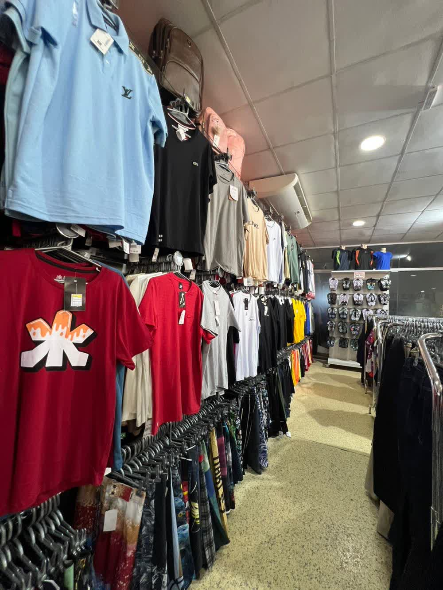
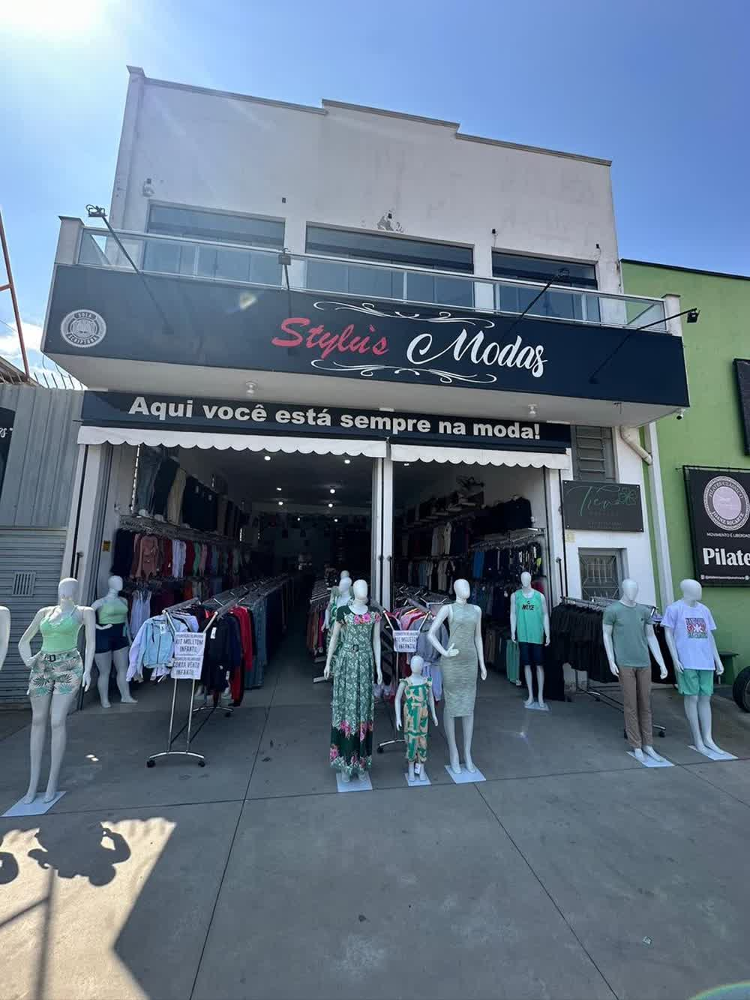
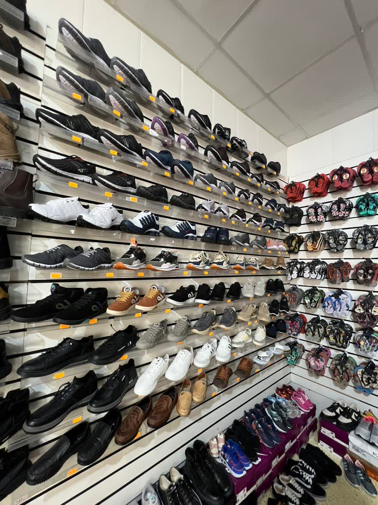
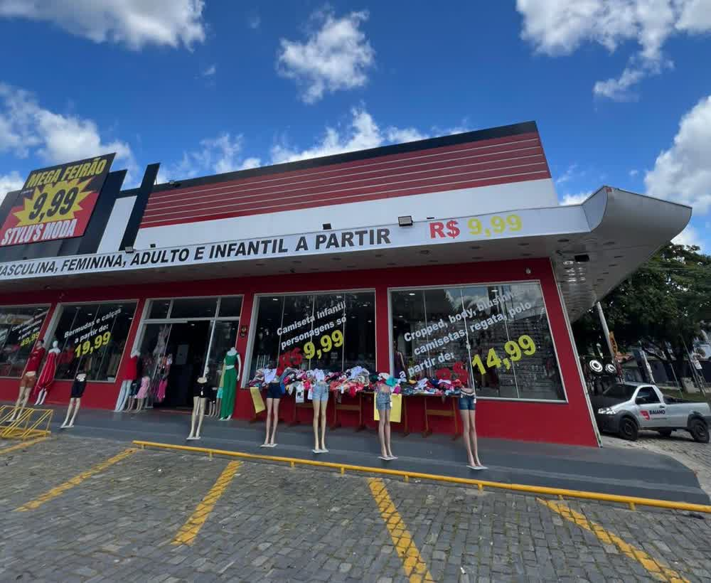

loja 1 · cidade salvador
Stylus Moda · Santo Ivo, 245
Rua Santo Ivo, 245 · Cidade Salvador, Jacareí/SP
- temfeminino, masculino e calçados
- horárioatende de segunda a sábado; confirme pelo WhatsApp
- whatsapp(12) 98137-0858
- mapaAbrir rota

moda feminina e masculina · jacareí, sp
"Aqui você está sempre na moda." Quatro lojas na Cidade Salvador com feminino, masculino, calçados e preço que acompanha o dia a dia.
Ver as lojas Falar no WhatsApp
Rua Santo Ivo, 245 e 428 · Rua Cachoeira Paulista, 469 · Av. Migrantes, 133

loja 1 · cidade salvador
Rua Santo Ivo, 245 · Cidade Salvador, Jacareí/SP

loja 2 · cidade salvador
Rua Santo Ivo, 428 · Cidade Salvador, Jacareí/SP

mega feirão · cidade salvador
Rua Cachoeira Paulista, 469 · Cidade Salvador, Jacareí/SP
como está na fachada
a partir de R$ 4,99
masculino, feminino, adulto e infantil

mega feirão · parque meia lua
Av. Migrantes, 133 · Parque Meia Lua, Jacareí/SP
o que tem nas lojas
Blusas, vestidos, croppeds e peças do dia a dia. Reposição de tamanhos toda semana.
Camiseta, camisa, bermuda e calça: roupa confortável para trabalho e fim de semana.
Tênis, sapato e sandália para completar o visual, em feminino, masculino e infantil.
contato
WhatsApp: (12) 98137-0858 · Instagram: @stylus_modas
Também tem loja em Guaratinguetá: Av. Agenor Pires da Fonseca, 178 · Jardim do Vale.
falar com a loja
Chame no WhatsApp, diga o que procura e a loja já mostra o que tem no tamanho certo. Vale para qualquer uma das quatro unidades da Cidade Salvador.
Falar no WhatsApp Ver as lojas
Quatro lojas na Cidade Salvador · a partir de R$ 4,99 no Mega Feirão